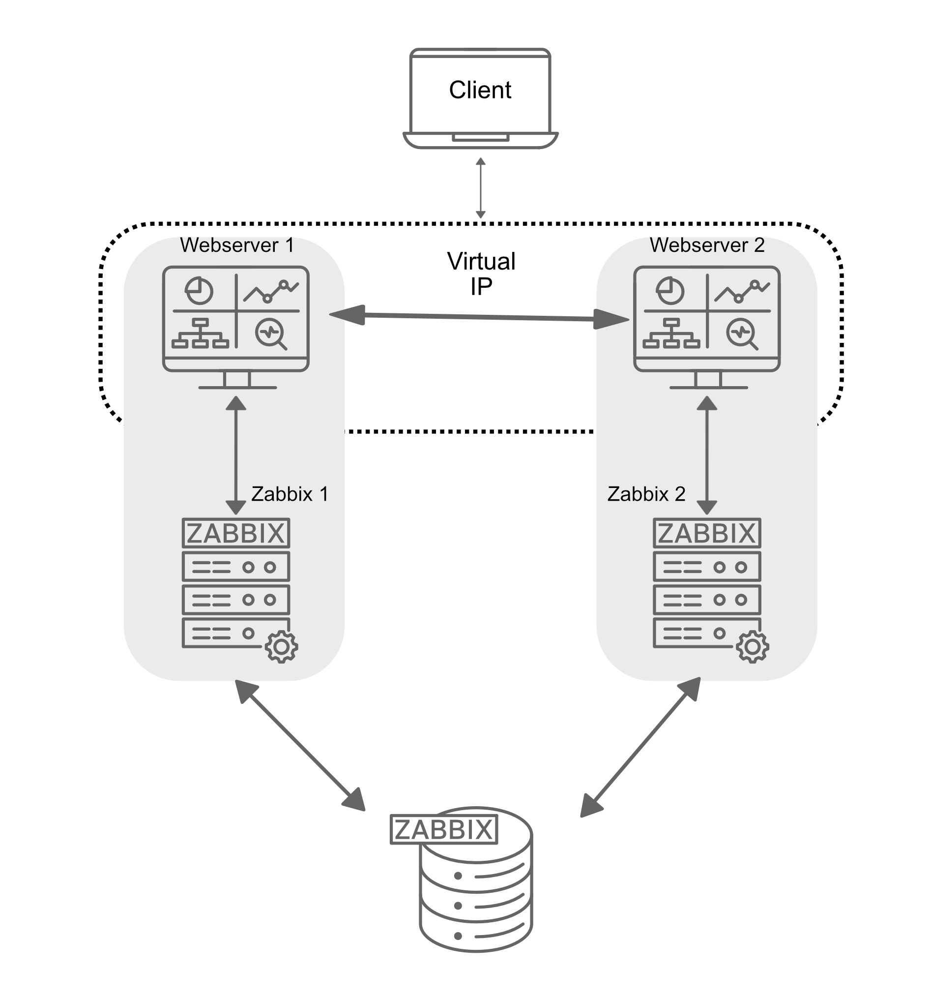
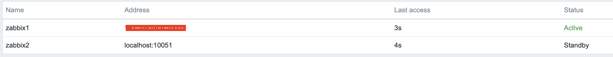
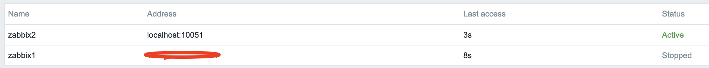

HA-instelling
In dit gedeelte gaan we Zabbix instellen in een High Availability (HA) configuratie. Deze native functie, geïntroduceerd in Zabbix 6, is een cruciale verbetering die ervoor zorgt dat je kunt blijven monitoren, zelfs als een Zabbix server uitvalt. Met HA, als een Zabbix server uitvalt, kan een andere het naadloos overnemen.
Voor deze handleiding gebruiken we twee Zabbix servers en één database, maar de setup maakt het mogelijk om meer Zabbix servers toe te voegen als dat nodig is.

1.1 HA Configuratie
Het is belangrijk op te merken dat de Zabbix HA setup eenvoudig is en redundantie biedt zonder complexe functies zoals load balancing. Slechts één node is een actieve node, alle andere nodes zijn stand-by. Alle stand-by Zabbix-servers in het HA-cluster monitoren het actieve knooppunt via heartbeats met behulp van de gedeelde database. Er is geen extra clustersoftware of zelfs geen firewallpoort nodig voor de Zabbix server zelf. Voor de frontend gebruiken we echter Keepalived om een virtueel IP (VIP) te bieden voor failover-doeleinden.
Net als in onze basisconfiguratie zullen we de belangrijkste details voor de servers in deze HA opstelling documenteren. Hieronder staat de lijst met servers en een plaats om hun respectievelijke IP-adressen toe te voegen:
| Server | IP-adres |
|---|---|
| Zabbix server 1 | |
| Zabbix server 2 | |
| Database | |
| Virtuele IP |
Note
Our database (DB) in this setup is not configured for HA. Since it's not a Zabbix component, you will need to implement your own solution for database HA, such as a HA SAN or a database cluster setup. A DB cluster configuration is out of the scope of this guide and unrelated to Zabbix, so it will not be covered here.
Installing the Database
Refer to the Zabbix components: Database chapter for detailed instructions on setting up the database. That chapter provides step-by-step guidance on installing either a PostgreSQL or MariaDB database on a dedicated node running Ubuntu, SUSE or Rocky Linux. The same installation steps apply when configuring the database for this setup.
Installing the Zabbix cluster
Setting up a Zabbix cluster involves configuring multiple Zabbix servers to work together, providing high availability. While the process is similar to setting up a single Zabbix server, there are additional configuration steps required to enable HA (High Availability).
Start by preparing the systems for- and installing Zabbix server on all systems by following the steps in the Preparing the server for Zabbix and Installing Zabbix server sections of the Zabbix components chapter.
Do note that:
- you need to skip the database population step on all but the first Zabbix server as the database is shared between all Zabbix servers.
- you need to skip the enabling and starting of the zabbix-server service on all servers as we will start it later after the HA configuration is done.
- you make sure that all Zabbix servers can connect to the database server. For
example, if you are using PostgreSQL, ensure that the
pg_hba.conffile is configured to allow connections from all Zabbix servers. - all Zabbix servers should use the same database name, user, and password to connect to the database.
- all Zabbix servers should be of the same major version.
When all Zabbix servers are installed and configured to access the database, we can proceed with the HA configuration.
Configuring Zabbix Server 1
Add a new configuration file for the HA setup on the first Zabbix server:
Add High Availability Zabbix server configuration
Insert the following line into the configuration file to enable HA mode.
Specify the frontend node address for failover scenarios:
Warning
The NodeAddress must match the IP or FQDN name of the Zabbix server node.
Without this parameter the Zabbix front-end is unable to connect to the active
node. The result will be that the frontend is unable to display the status
the queue and other information.
Configuring Zabbix Server 2
Repeat the configuration steps for the second Zabbix server. Adjust the
HANodeName and NodeAddress as necessary for this server.
Zabbix server 2 HA configuration high-availability.conf
You can add more servers by repeating the same steps, ensuring each server has a
unique HANodeName and the correct NodeAddress set.
Starting Zabbix Server
After configuring both servers, enable and start the zabbix-server service on each:
Verifying the Configuration
Check the log files on both servers to ensure they have started correctly and are operating in their respective HA modes.
On the first server:
In the system logs, you should observe the following entries, indicating the initialization of the High Availability (HA) manager:
HA log messages on active node
These log messages confirm that the HA manager process has started and has assumed the active role. This means that the Zabbix instance is now the primary node in the HA cluster, handling all monitoring operations. If a failover event occurs, another standby node will take over based on the configured HA strategy.
Running the same command on the second server (and any additional nodes):
HA log messages on standby node
These messages confirm that the HA manager process was invoked and successfully launched in standby mode. This suggests that the node is operational but not currently acting as the active HA instance, awaiting further state transitions based on the configured HA strategy.
At this stage, your Zabbix cluster is successfully configured for High Availability (HA). The system logs confirm that the HA manager has been initialized and is running in standby mode, indicating that failover mechanisms are in place. This setup ensures uninterrupted monitoring, even in the event of a server failure, by allowing automatic role transitions based on the HA configuration.
Frontend installeren
Before proceeding with the installation and configuration of the web server, it is essential to install some sort of clustering software or use a load-balancer in front of the Zabbix frontends to be able to have a shared Virtual IP (VIP).
load-balancers, including Pacemaker, Corosync, HAProxy, F5 Big-Ip, Citrix NetScaler, and various cloud load balancers. Each of these solutions offers a range of features and capabilities beyond just providing a VIP for failover purposes. But for the purpose of this guide, we will focus on a minimalistic approach to achieve high availability for the Zabbix frontend using Keepalived.
Keepalived is like a helper that makes sure one computer takes over if another one stops working. It gives them a shared magic IP address so users don't notice when a server fails. If the main one breaks, the backup jumps in right away by taking over the IP.
Keepalived is a minimal type of clustering software that enables the use of a (VIP) for frontend services, ensuring seamless failover and service continuity.
High Availability on SUSE Linux Enterprise Server (SLES)
On SUSE Linux Enterprise Server (SLES), Keepalived is not included in the default subscription hence unavailable in the default repositories.
To be able to install and use Keepalived on SLES in a supported way, you will need to obtain the additional 'SUSE Linux Enterprise High Availability Extension' subscription (SLE HA). This subscription provides access to the necessary packages and updates required for Keepalived and other high availability components. After obtaining the subscription, you can enable the appropriate repositories and proceed with the installation of Keepalived as outlined in this guide:
WhereADDITIONAL_REGCODE is the registration code provided with your
'SUSE Linux Enterprise High Availability Extension' subscription.
Setting up keepalived
On all Servers that will host the Zabbix fronted we have to install keepalived. As mentioned before, this can be done on separate servers to split up the server and frontend roles, but in this guide we will install keepalived on both Zabbix servers to ensure high availability of both the frontend and the server.
Install keepalived
Red Hat
SUSE
Ubuntu
Next, we need to modify the Keepalived configuration on all servers. While the configurations will be similar, each server requires slight adjustments. We will begin with Server 1. To edit the Keepalived configuration file, use the following command:
If the file contains any existing content, it should be cleared and replaced with the following lines:
Warning
Replace enp0s1 with the interface name of your machine and replace the password
with something secure. For the virtual_ipaddress use a free IP from your network.
This will be used as our VIP.
We can now do the same modification on our second or any subsequent Zabbix
server. Delete again everything in the /etc/keepalived/keepalived.conf file
like we did before and replace it with following lines:
Just as with our 1st Zabbix server, replace enp0s1 with the interface name of
your machine and replace the password with your password and fill in the
virtual_ipaddress as done before.
Make sure that the firewall allows Keepalived traffic on all servers. The VRRP
protocol is different than the standard IP protocol and uses multicast address
224.0.0.18. Therefore, we need to explicitly allow this traffic through the
firewall. Perform the following commands on all servers:
Allow keepalived traffic through the firewall
Red Hat / SUSE
Ubuntu
This ends the configuration of Keepalived. We can now continue adapting the frontend.
Install and configure the frontend
Install the Zabbix frontend on all Zabbix servers, part of the cluster by following the steps outlined in the Installing the frontend section.
Warning
Ubuntu users need to use the VIP in the setup of Nginx, together with the local IP in the listen directive of the config.
Note
Don't forget to configure both front-ends. Also this is a new setup. Keep in
mind that with an existing setup we need to comment out the lines $ZBX_SERVER
and $ZBX_SERVER_PORT in /etc/zabbix/web/zabbix.conf.php. Our frontend
will check what node is active by reading the node table in the database.
You can verify which node is active by querying the ha_node table in the
Zabbix database. This table contains information about all nodes in the HA
cluster, including their status. To check the status of the nodes, you can run
the following SQL query:
Check the ha_node table in a PostgreSQL database
zabbix=> select * from ha_node;
ha_nodeid | name | address | port | lastaccess | status | ha_sessionid
---------------------------+---------+-----------------+-------+------------+--------+---------------------------
cm8agwr2b0001h6kzzsv19ng6 | zabbix1 | xxx.xxx.xxx.xxx | 10051 | 1742133911 | 0 | cm8apvb0c0000jkkzx1ojuhst
cm8agyv830001ell0m2nq5o6n | zabbix2 | localhost | 10051 | 1742133911 | 3 | cm8ap7b8u0000jil0845p0w51
(2 rows)
In this instance, the node zabbix2 is identified as the active node, as
indicated by its status value of 3, which designates an active state. The
possible status values are as follows:
0– Multiple nodes can remain in standby mode.1– A previously detected node has been shut down.2– A node was previously detected but became unavailable without a proper shutdown.3– The node is currently active.
This classification allows for effective monitoring and state management within the cluster.
Once the frontend is installed on all servers, we need to start and enable the Keepalived service to ensure it starts automatically on boot and begins managing the VIP:
Verify the correct working
To verify that the setup is functioning correctly, access your Zabbix server using the Virtual IP (VIP). Navigate to Reports → System Information in the menu. At the bottom of the page, you should see a list of servers, with at least one marked as active. The number of servers displayed will depend on the total configured in your HA setup.

1.2 verify HA
Shut down or reboot the active frontend server and observe that the Zabbix frontend remains accessible. Upon reloading the page, you will notice that the other frontend server has taken over as the active instance, ensuring an almost seamless failover and high availability.

1.3 verify HA
In addition to monitoring the status of HA nodes, Zabbix provides several runtime commands that allow administrators to manage failover settings and remove inactive nodes dynamically.
One such command is:
This command adjusts the failover delay, which defines how long Zabbix waits before promoting a standby node to active status. The delay can be set within a range of 10 seconds to 15 minutes.
To remove a node that is either stopped or unreachable, the following runtime command must be used:
Executing this command removes the node from the HA cluster. Upon successful removal, the output confirms the action:
Removal of a node
If the removed node becomes available again, it can be added back automatically
when it reconnects to the cluster. These runtime commands provide flexibility
for managing high availability in Zabbix without requiring a full restart of the
zabbix_server process.
Conclusie
In this chapter, we have successfully set up a high-availability (HA) Zabbix environment by configuring both the Zabbix server and frontend for redundancy. We first established HA for the Zabbix server, ensuring that monitoring services remain available even in the event of a failure. Next, we focused on the frontend, implementing a Virtual IP (VIP) with Keepalived to provide seamless failover and continuous accessibility.
Additionally, we configured the firewall to allow Keepalived traffic and ensured that the service starts automatically after a reboot. With this setup, the Zabbix frontend can dynamically switch between servers, minimizing downtime and improving reliability.
While database HA is an important consideration, it falls outside the scope of this setup. However, this foundation provides a robust starting point for building a resilient monitoring infrastructure that can be further enhanced as needed.
Vragen
- What is Zabbix High Availability (HA), and why is it important?
- How does Zabbix determine which node is active in an HA setup?
- Can multiple Zabbix nodes be active simultaneously in an HA cluster? Why or why not?
- What configuration file(s) are required to enable HA in Zabbix?